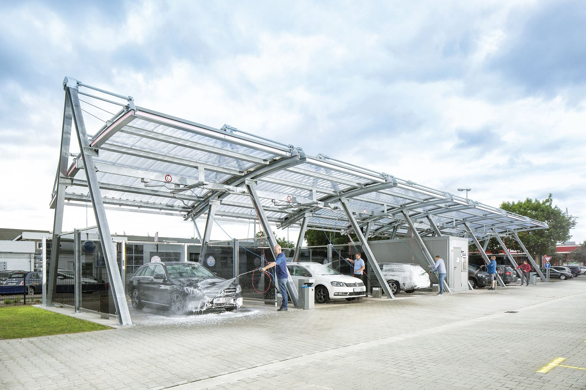
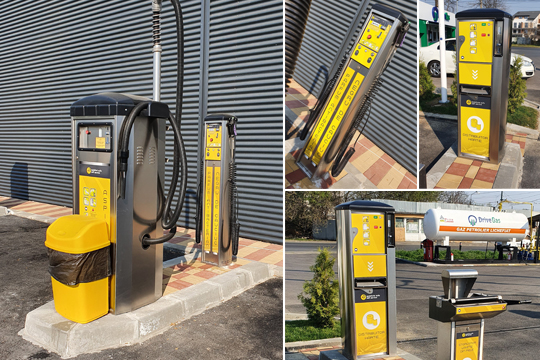

MultiWash îți prezintă construcția unei spălătorii auto self service cu program de funcționare NON-STOP.
Acest tip de construcție implică instalarea unei structuri metalice modulare din oțel sau inox (pentru pompe și tabloul de comandă) care este fixată cu prezoane în suprafața unei infrastructuri sau platforme din beton armat.
În cadrul construcției unei spălătorii auto în regim de autoservire sunt integrate instalațiile de apă, canalizare, gaz, electricitate.
Spălătoriile auto self service MultiWash dispun de zonă de ieșire separată de zona de intrare, fapt care asigură un flux continuu de beneficiari, de până la 7 mașini / oră / pistă.
Fiecare stație integrează echipamente de ultimă generație, iar tehnologia acestora se diferențiază în funcție de programele opționale de spălare.

Pentru curățarea interioară a mașinii sunt disponibile programe de dezinfecție pentru aer condiționat, odorizare și curățare tapițerie.
Oricine își poate curăța mașina la interior prin intermediul programelor de aspirare, suflare aer cald sau curățare banchetă și covorașe.

Camera tehnica deserveste fiecare boxa de spalare si este conceput astfel incat sa asigure o functionare optima a echipamentelor 24/7.